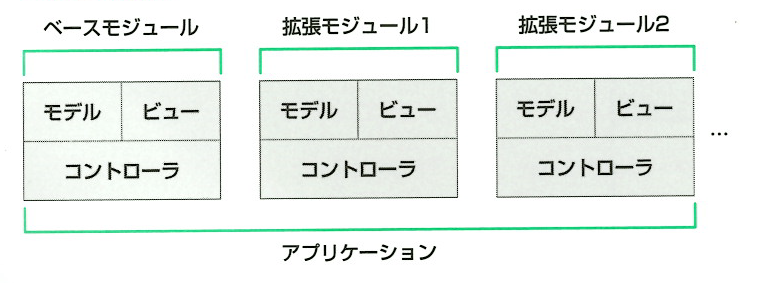
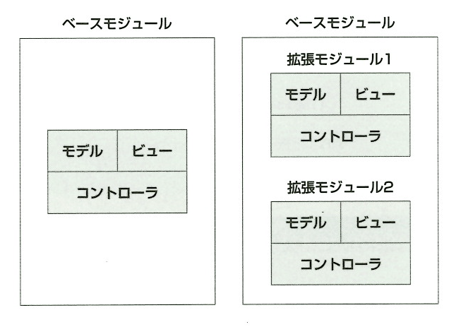
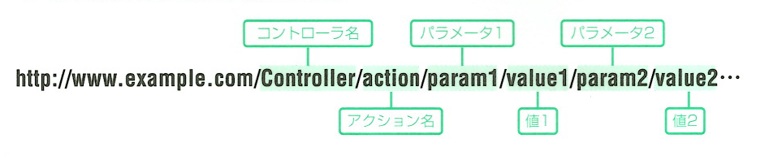
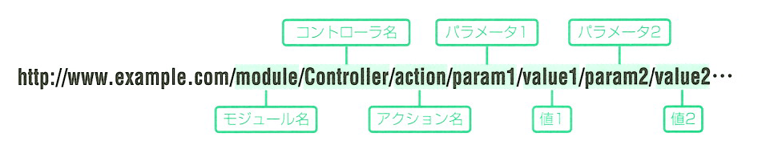

├ application ……………………………………アプリケーションディレクトリ
│└ modules ……………………………………モジュールディレクトリ
│ ├ default ……………………………………ベースディレクトリ
│ │├ controllers
│ │├ models
│ │└ views
│ ├ modules1 ……………………………………拡張モジュール１
│ │├ controllers
│ │├ models
│ │└ views
│ └ modules2 ……………………………………拡張モジュール２
│ ├ controllers
│ ├ models
│ └ views
└ html ……………………………………公開ディレクトリ
Programmer's Reference Guide
機能拡張を考えたアプリケーション
Zend Framework での拡張化対応
Zend Framework では、将来の機能拡張やカスタマイズを、手軽に実現するための工夫が施されています。
それが、「モジュール構造」です。
「モジュール構造」とは、アプリケーションの基本となるコントローラ、モデル、ビューを「モジュール」という１つのブロックとしてとらえ、
その「モジュール」をいくつか組み合わせることにより、アプリケーションを構成するという思想です。
Note: More Information

ディレクトリ構成
モジュール構造に対応したＵＲＬ書式
既存システムに機能拡張対応
当初は機能拡張の予定が無かったにもかかわらず、後から機能拡張を行うことになった場合においても、
Zend Framework では、次のように少し工夫をすれば、効率のよい機能拡張の仕組みを実現することができる。
Note: More Information

既存システム部分を「ベースシステム」と位置づけ、機能拡張を「サブシステム」と位置づけます。
サブシステム部分はモジュール構造を採用することで、元のシステムは触れずに、効率の良い機能拡張を可能になる。
ここでは、この方式を「サブシステム方式」と呼ぶことにする。
ディレクトリ構成
├ application ……………………………………アプリケーションディレクトリ
│├ controllers
│├ models
│├ views
│└ subsys ……………………………………サブシステムディレクトリ
│ ├ modules1 ……………………………………拡張モジュール１
│ │├ controllers
│ │├ models
│ │└ views
│ └ modules2 ……………………………………拡張モジュール２
│ ├ controllers
│ ├ models
│ └ views
└ html ……………………………………公開ディレクトリ
メインシステムへアクセスする場合のＵＲＬ書式

サブシステムへアクセスする場合のＵＲＬ書式

ananFD システム
ananFD は、「モジュール構造」（サブシステム方式）対応をしております。
基本システム部分を「ベースシステム」と位置づけ、機能拡張を「サブシステム」と位置づけます。
サブシステム部分はモジュール構造を採用することで、元のシステムは触れずに、効率の良い機能拡張を可能になる。
ananfd ディレクトリ構成
└ html ……………………………………公開ディレクトリ（ドキュメントルート）
│
├ ananfd.doc ………………………ananfd ドキュメントディレクトリ
│
├ application …………………………ananfd アプリケーションディレクトリ
│ ├ lib ……………………………………ライブラリディレクトリ
│ │ ├ config.ini ……………………………………データファイル
│ │ ├ anandef.php ……………………………………データファイル
│ │ ├ function.php ……………………………………データファイル
│ │ ├ data …………………………………セットアップデータディレクトリ
│ │ │ ├ ananfd2011.sql ……………………………………セットアップファイル
│ │ │ ├ user_2011.csv ……………………………………セットアップファイル
│ │ │ ├ subject_2011.csv ……………………………………セットアップファイル
│ │ │ ├ subteacher_2011.csv ……………………………………セットアップファイル
│ │ │ ├ subfile_2011.csv ……………………………………セットアップファイル
│ │ │ ├ member_2011.csv ……………………………………セットアップファイル
│ │ │ └ job_2011.csv ……………………………………セットアップファイル
│ │ └ IPAfont00203 …………………IPAフォントディレクトリ
│ │ ├ ipag.ttf ……………………………………IPAフォント
│ │ └ ipam.ttf ……………………………………IPAフォント
│ │
│ └ vers …………………………………モジュールディレクトリ
│ ├ default ……………………………………ベースディレクトリ
│ │ ├ controllers ……………………………………コントローラスクリプトディレクトリ
│ │ │ ├ IndexController.php ……………………………………アクションコントローラの実体
│ │ │ └ ErrorController.php ……………………………………アクションコントローラの実体
│ │ ├ modules ……………………………………モデルスクリプトディレクトリ
│ │ │ ├ aciModel.php ……………………………………モデルスクリプト
│ │ │ └ userModel.php ……………………………………モデルスクリプト
│ │ └ views ……………………………………ビューディレクトリ
│ │ └ scripts ……………………………………ビュースクリプトディレクトリ
│ │ └ index ……………………………………コントローラ名
│ │ └ index.phtml ……………………………………ビュースクリプト（アクション名＋.phtml）
│ │ └ error ……………………………………コントローラ名
│ │ └ error.phtml ……………………………………ビュースクリプト（アクション名＋.phtml）
│ │
│ ├ ver2012 …………………………………2012 拡張モジュール
│ │ ├ controllers ………………………………………コントローラスクリプトディレクトリ
│ │ ├ modules ………………………………………モデルスクリプトディレクトリ
│ │ └ views ………………………………………ビューディレクトリ
│ │
│ └ ver2013 …………………………………2013 拡張モジュール
│ ├ controllers ………………………………………コントローラスクリプトディレクトリ
│ ├ modules ………………………………………モデルスクリプトディレクトリ
│ └ views ………………………………………ビューディレクトリ
│
└ ananfd ……………………………………ananfd 公開ディレクトリ
├ .htaccess ……………………………………すべてのリクエストを index.php に渡す設定
├ index.php ……………………………………フロントコントローラ
├ common ……………………………………コモンディレクトリ
├ docs …………………………………………ドキュメントディレクトリ
└ movies …………………………………………動画ファイルディレクトリ
メインシステムへアクセスする場合のＵＲＬ書式
サブシステムへアクセスする場合のＵＲＬ書式
更新情報